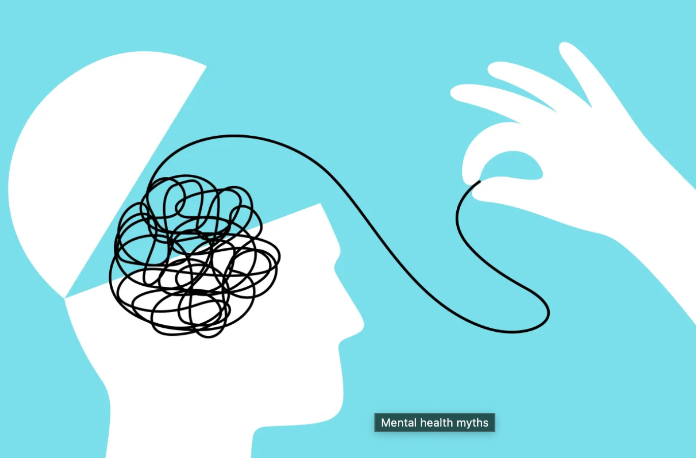

There are many misunderstandings about mental health. These myths can stop people from seeking help and may increase stigma around mental health problems.

Hover over this text to highlight it — talking about mental health really does make a difference.
Write down a mental health myth you have heard before. Highlight any words you feel are most harmful.
Misunderstandings about mental health can sometimes discourage people from speaking openly about their experiences. When myths are widely believed, individuals may feel embarrassed or afraid to ask for help.
Education and awareness play an important role in challenging these misconceptions. By learning accurate information about mental health, people can develop a more supportive and understanding attitude toward those experiencing difficulties.
Mental health problems can affect anyone, regardless of age, background, or lifestyle. Talking openly about mental health can help reduce stigma and encourage people to get the support they need.
Support, treatment, and healthy coping strategies can make a positive difference. Many people improve when they receive the right help, whether this is through talking to someone they trust, accessing support services, or speaking to a health professional.
Talking openly about mental health can help reduce stigma and encourage more people to seek support. When myths are challenged with facts, people are more likely to understand mental health in a realistic and supportive way.